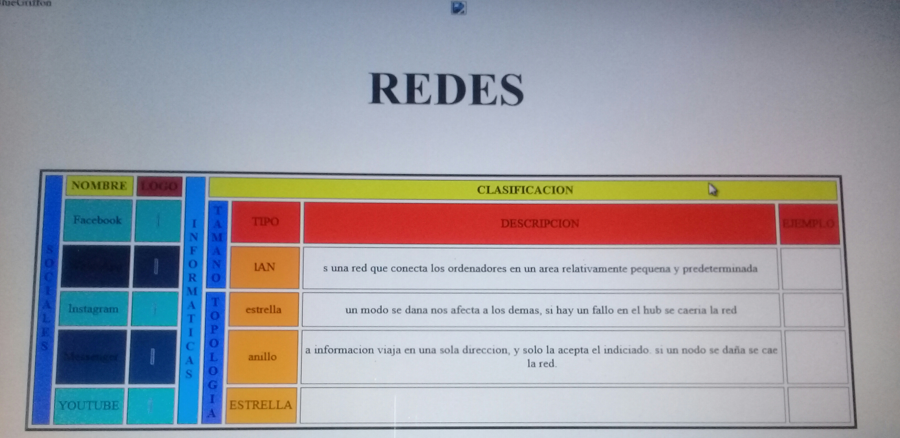
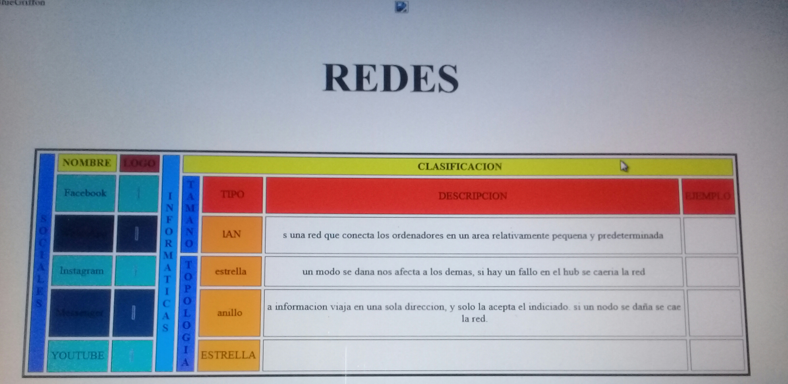

Pagina WEB tablas
Dentro de esta practica se realizaron una tablas para la organizacion de informacion dentro de estas utilizamos los comandos de div y table que son
los que nos permitieron crearlas, tambien insertamos imagenes en los recuadros dentro de la tablas, esta pagina fue basada en sitios web y algunas
redes sociales, en esta practica aprendimos ha realizar paginas web de una manera muy sencilla utilizando el html.
 

Lesly Abigail Torres Ramirez 6101